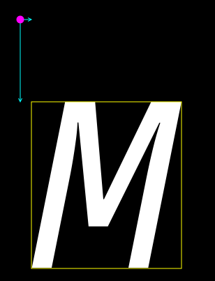
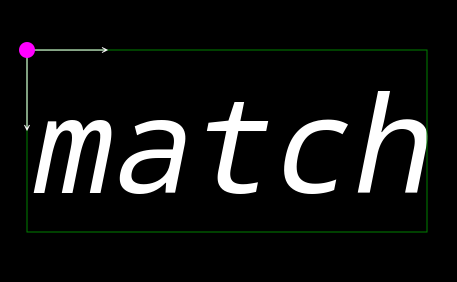
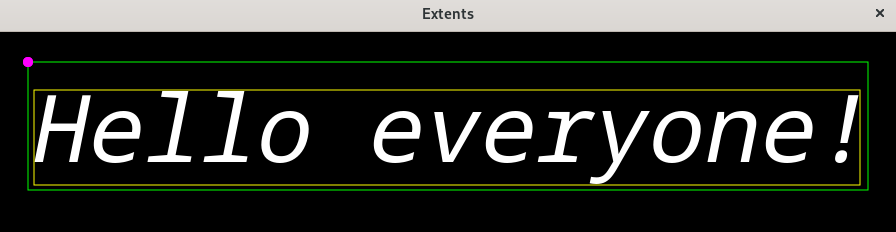

(update:2025/4/29)
Pangoでグラフィック画面(Gtk::DrawingArea)に表示される文字列の範囲を取得する方法を示します。

ink_extentsは、文字列に接する長方形の範囲を表します。
※Pangoでは、描画位置として指定するx,y座標は、左上角となります（右図のピンク色）
[x座標]: int Pango::Rectamgle::get_x()
[y座標]: int Pango::Rectangle::get_y()
[幅 ] : int Pango::Rectangle::get_width()
[高さ] : int Pango::Rectangle::get_height()
| Pango::Rectangle | Pango::Layout::get_pixel_ink_extents() |
|---|

logical extentsは、描画の基準点と文字列を包含する長方形の範囲を示します。
[x座標]: int Pango::Rectamgle::get_x()
[y座標]: int Pango::Rectangle::get_y()
※logical extentsでは、両値はともに0になります。
[幅 ] : int Pango::Rectangle::get_width()
[高さ] : int Pango::Rectangle::get_height()
| Pango::Rectangle | Pango::Layout::get_pixel_logical() |
|---|
#include <gtkmm.h>
#include <iostream>
class Drawing : public Gtk::DrawingArea {
public:
Drawing();
virtual ~Drawing() = default;
protected:
void on_draw(const Cairo::RefPtr<Cairo::Context>& cr, int width, int height);
};
Drawing::Drawing()
{
set_draw_func( sigc::mem_fun( *this, &Drawing::on_draw));
}
void Drawing::on_draw(const Cairo::RefPtr<Cairo::Context>& cr, int width, int height) {
Pango::FontDescription font;
font.set_family( "MonoSpace" );
font.set_weight( Pango::Weight::NORMAL );
font.set_style( Pango::Style::ITALIC );
font.set_size( 70 * Pango::SCALE );
Glib::RefPtr<Pango::Layout> layout = create_pango_layout( "" );
layout->set_text( "Hello everyone!" );
layout->set_font_description( font );
int tx = 30.0;
int ty = 30.0;
Gdk::Cairo::set_source_rgba( cr, Gdk::RGBA( "black" ));
cr->paint();
cr->move_to( tx, ty );
Gdk::Cairo::set_source_rgba( cr, Gdk::RGBA( "white" ));
layout->show_in_cairo_context( cr );
Gdk::Cairo::set_source_rgba( cr, Gdk::RGBA( "Fuchsia" ));
cr->arc( tx, ty, 5.0, 0.0, 2*M_PI );
cr->fill();
std::cout << "width : " << width << std::endl;
std::cout << "height : " << height << std::endl;
Pango::Rectangle a = layout->get_pixel_ink_extents();
cr->rectangle( tx + a.get_x(), ty + a.get_y(), a.get_width(), a.get_height() );
Gdk::Cairo::set_source_rgba( cr, Gdk::RGBA( "Yellow" ));
cr->set_line_width( 1.0 );
cr->stroke();
std::cout << "ink_x : " << a.get_x() << std::endl;
std::cout << "ink_y : " << a.get_y() << std::endl;
std::cout << "ink_width : " << a.get_width() << std::endl;
std::cout << "ink_height : " << a.get_height() << std::endl;
Pango::Rectangle b = layout->get_pixel_logical_extents();
cr->rectangle( tx + b.get_x(), ty + b.get_y(), b.get_width(), b.get_height() );
Gdk::Cairo::set_source_rgba( cr, Gdk::RGBA( "lime" ));
cr->set_line_width( 1.0 );
cr->stroke();
std::cout << "logical_x : " << b.get_x() << std::endl;
std::cout << "logical_y : " << b.get_y() << std::endl;
std::cout << "logical_width : " << b.get_width() << std::endl;
std::cout << "logical_height : " << b.get_height() << std::endl;
Gdk::Cairo::set_source_rgba( cr, Gdk::RGBA( "Fuchsia" ));
cr->arc( tx, ty, 5.0, 0.0, 2*M_PI );
cr->fill();
}
class MyWindow : public Gtk::Window
{
public:
MyWindow();
protected:
Drawing my_draw;
};
MyWindow::MyWindow()
{
set_title( "Extents" );
set_default_size( 900, 240 );
set_child( my_draw );
}
int main(int argc, char* argv[]) {
auto app = Gtk::Application::create( "gtkmm4.example" );
return app->make_window_and_run<MyWindow>( argc, argv );
}
| Text Align Center | |
|---|---|
| Console | Window |
|
width : 900 height : 203 ink_x : 6 ink_y : 28 ink_width : 826 ink_height : 95 logical_x : 0 logical_y : 0 logical_width : 840 logical_height : 128 |
 |